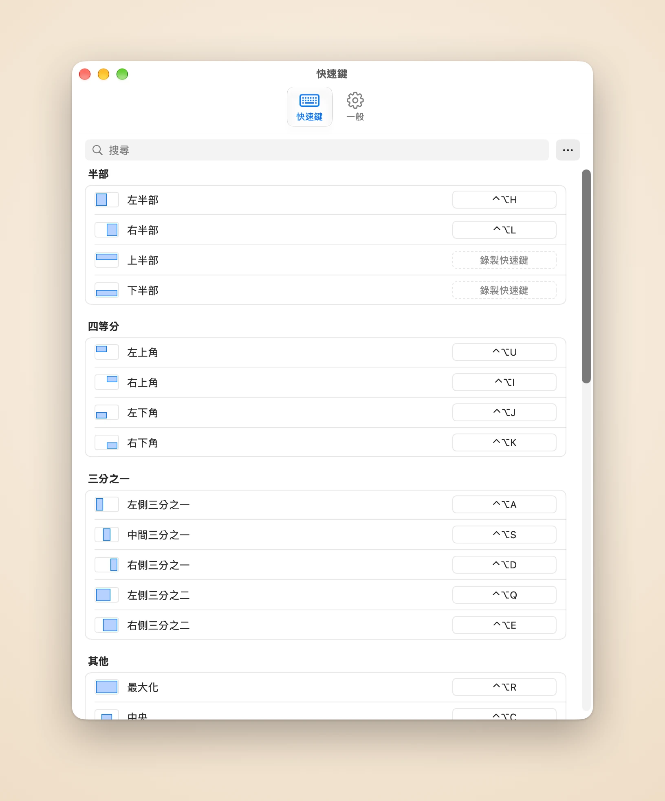

一鍵鋪開你正在用的視窗
Piccolo記得你最近用過哪些視窗。一個快速鍵，就能把最近的兩個、三個或六個視窗在目前的顯示器上並排或排成網格，不必再一個個挑。
Piccolo記得你最近用過哪些視窗。一個快速鍵，就能把最近的兩個、三個或六個視窗在目前的顯示器上並排或排成網格，不必再一個個挑。
Piccolo排好一組視窗後，用快速鍵移動目前視窗旁的分隔線，相鄰視窗會跟著變，不留空隙也不重疊。交換視窗能讓兩個視窗互換位置，版面維持不變。
按住快速鍵，醒目框會顯示視窗將去的位置。放開就移過去，按Esc則什麼都不變。
再按一次變成2/3，再按變成1/3
⌃⌥H ⌃⌥L
每個角落各一個鍵
⌃⌥U ⌃⌥I ⌃⌥J ⌃⌥K
寬螢幕上的三欄版面
⌃⌥A ⌃⌥S ⌃⌥D
給主視窗留足空間
⌃⌥Q ⌃⌥E
填滿整個螢幕
⌃⌥R
大小不變，移到正中央
⌃⌥C
維持相對大小與位置
⌃⌥[ ⌃⌥] ⌃⌥⌘+方向鍵
在螢幕示意圖上自己畫
⌃⌥W
回到移動之前的位置
⌃⌥⌫
在設定裡點一下動作，按下你想要的組合鍵即可。網格和自訂區域也能有自己的快速鍵，進階使用者還可以直接編輯設定檔。

所有動作都在一張列表裡。點一列，按下按鍵，立即儲存。⌘Z可以還原任何更改。
視窗平順地滑到定位，無處可去時輕輕回彈。速度可調，也可以關掉。
視窗填不滿網格時，可以選擇最後一個視窗縱向或橫向鋪開：橫向螢幕用欄優先，直向螢幕用列優先。
在視窗之間和螢幕邊緣留出間距，陰影不會疊成一道道黑縫。
English、简体中文、繁體中文、日本語、Français、Español、Português和Deutsch。
無需帳號，不做統計。只有許可證驗證和檢查更新會連網。
首發特惠
US$4.99 一次買斷，首發期後US$9.99
訂單由記錄商戶Dodo Payments處理，負責付款、稅務和發票。
macOS 14或以上版本，以及輔助使用權限：Piccolo透過macOS輔助使用API移動其他App的視窗，沒有這個權限就無法移動任何視窗。
Piccolo透過macOS輔助使用API移動和調整其他App的視窗，沒有這個權限就無法移動任何視窗。它只用這個權限讀取和更改視窗的位置與大小。你可以在「系統設定」>「隱私權與安全性」>「輔助使用」中允許。
除此之外，沒有任何資料離開你的Mac：不做統計，不收集當機報告。你的視窗、快速鍵和設定檔都留在本機。詳見隱私權政策（英文）。
一份許可證可用於3部Mac。
在要釋出的那部Mac上打開設定，進入「一般」，選擇「在這部Mac上停用」，然後在另一部Mac上啟用許可證。
購買後30天內可無理由退款。請寄信到support@damao.io並附上訂單編號。詳見退款政策（英文）。